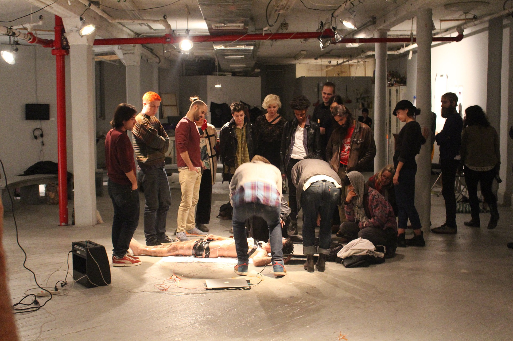
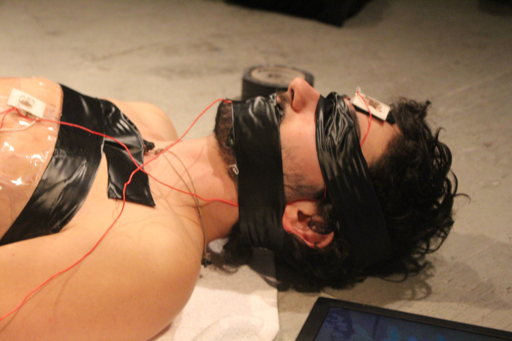
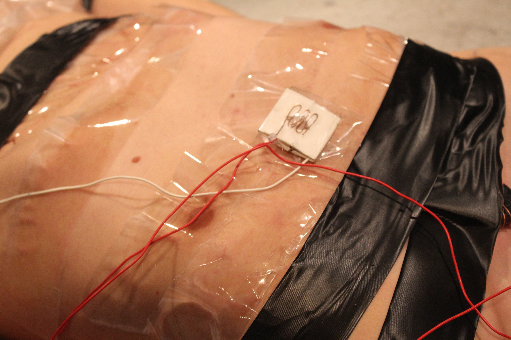
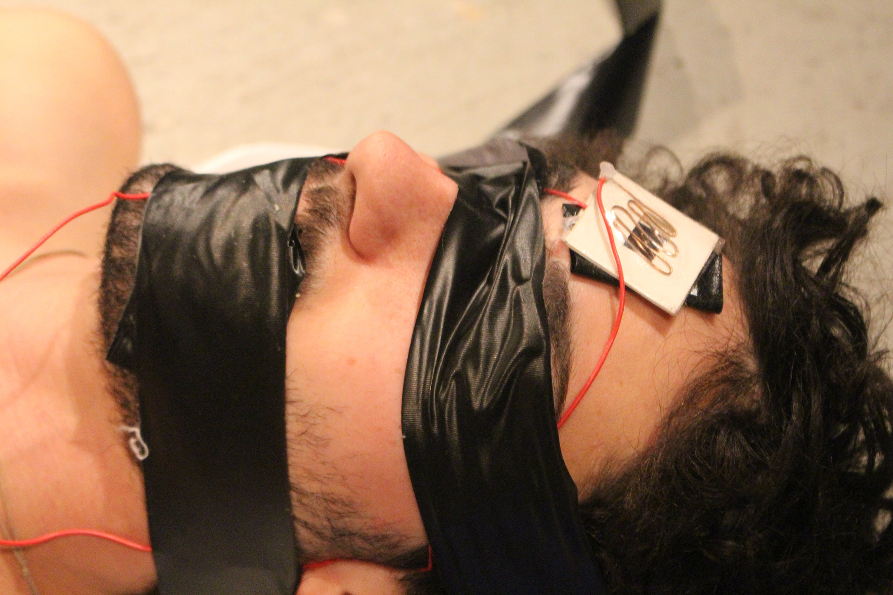
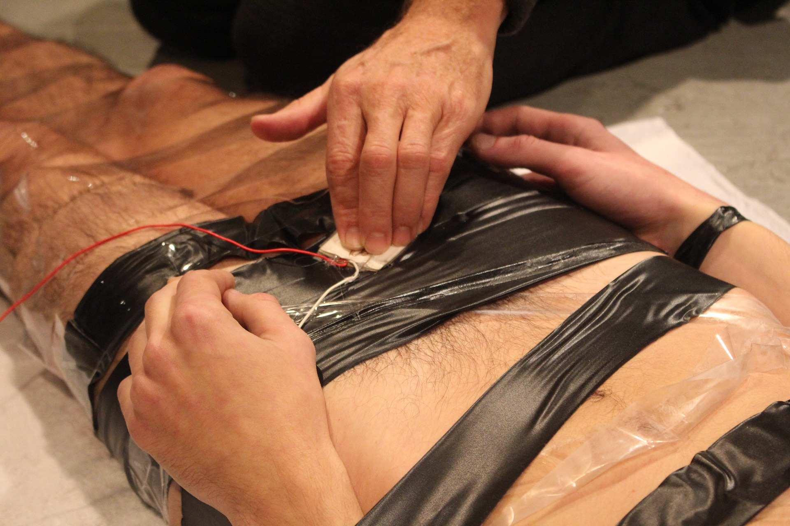
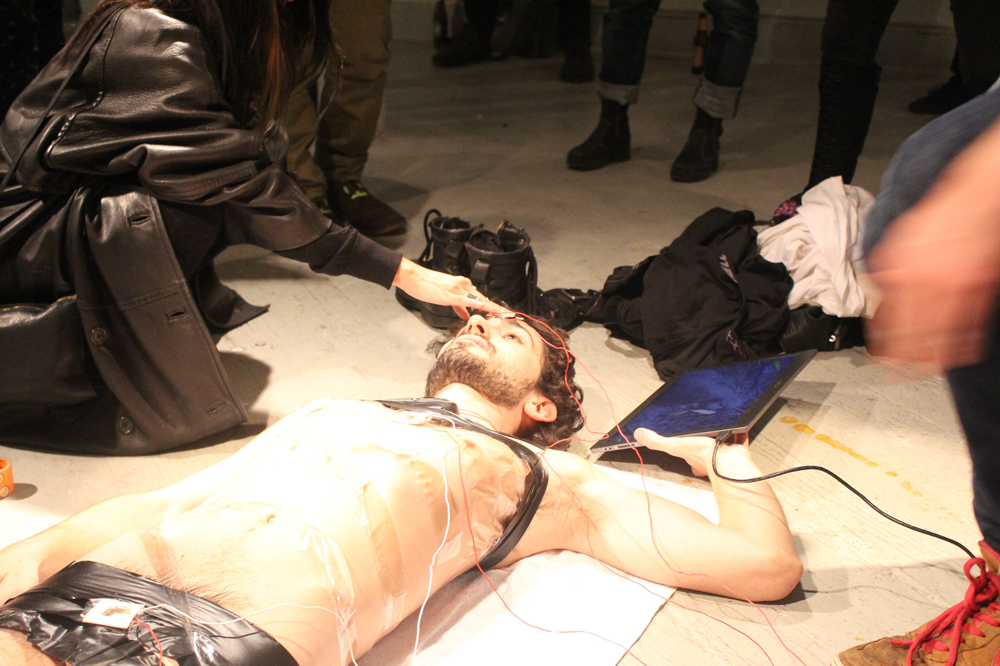
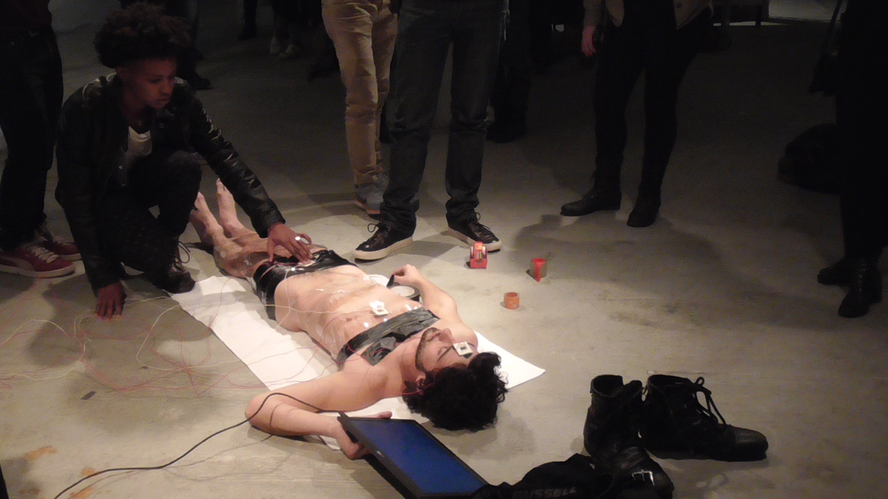
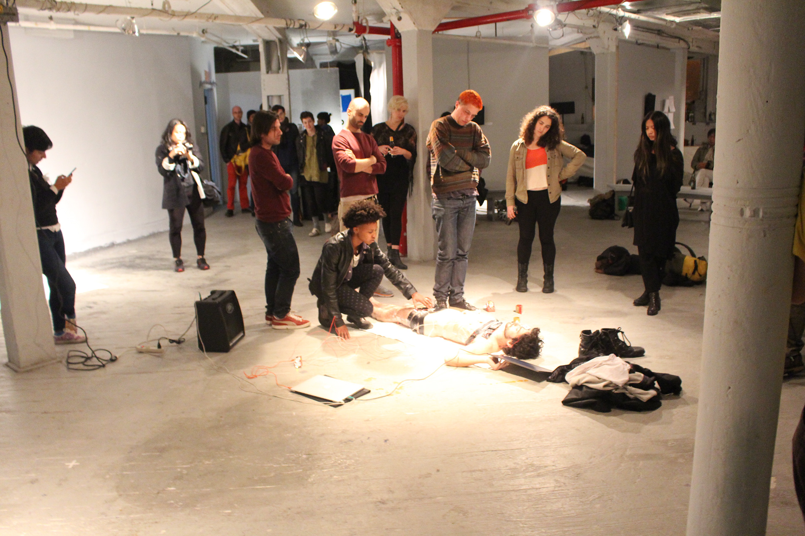
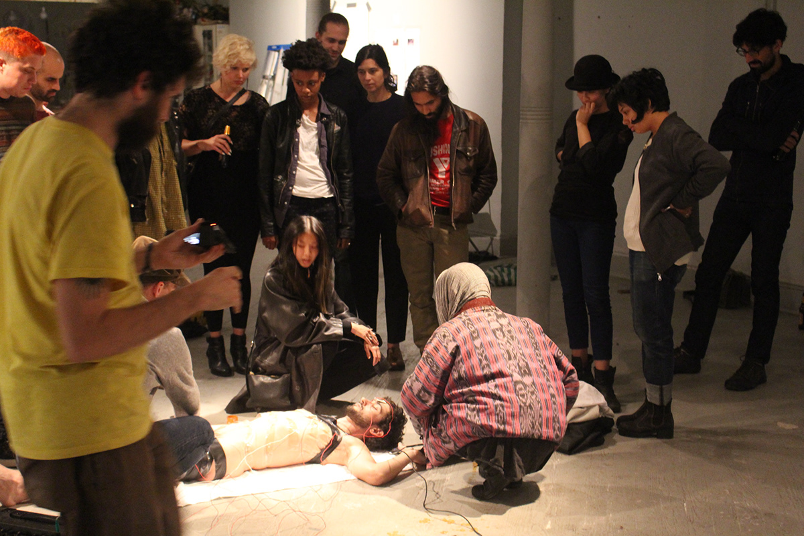
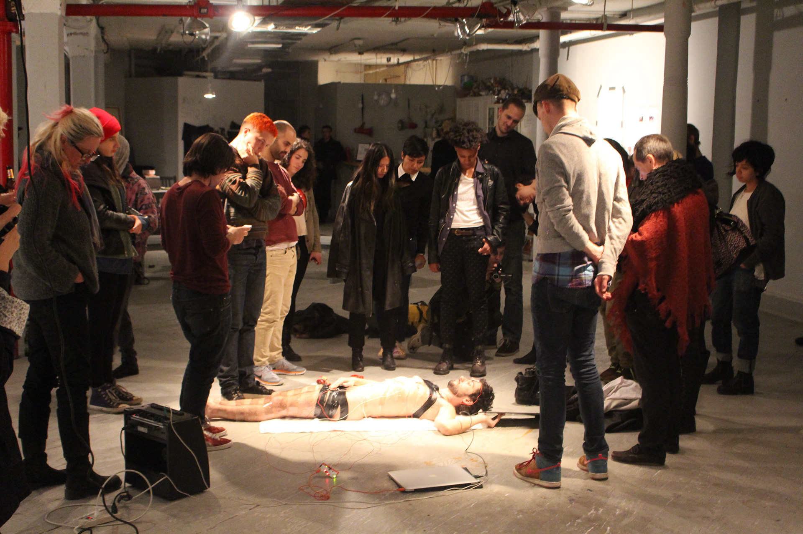

Please, Touch the Immigrant

The immigrant has a profoundly paradoxical relationship with the culture and place to which they are acculturating. On one hand, the act of immigrating implies a conscious effort to achieve goals and dreams, and is filled with hope. On the other hand, it is perhaps one of the loneliest and most disorienting endeavors a human being can undertake. Common sense ceases to exist as language becomes unintelligible, and simple needs such as sex, intimacy, and relationships become nearly inaccessible.
In Please, Touch the Immigrant, I use my own body as a living, semi-static sculptural form, an example of the acculturated individual. In this multimedia performance, participants are compelled to touch crudely made pressure sensors taped to specific parts of my body while I hold a monitor. As participants explore my body with their hands, they discover that each sensor triggers different sounds and videos shown on the monitor.



The videos have intimate relationships with the parts of my body to which the sensors are attached and relate allegorically to the experience of the immigrant. Sensors on my ankle trigger a macabre scene of a deer carcass, believed to be roadkill, being devoured by innumerable maggots and flies. Sensors on my groin trigger a video of a personal ritual of a seemingly pagan and highly sexual nature.
On my chest, sensors play a video of two ex-lovers spitting at each other incessantly while taking turns in an orderly fashion. Finally, on my head, a video documenting preparation for a spiritual undertaking is activated upon touch.


Throughout the performance, I slowly mummify myself with packing tape and black vinyl tape of varied kinds, placing myself in an increasingly vulnerable condition as the work unfolds.



